MARYLAND
Trail Review
West Virginia
Pennsylvania
Home
Annapolis Rock off Appalachian Trail
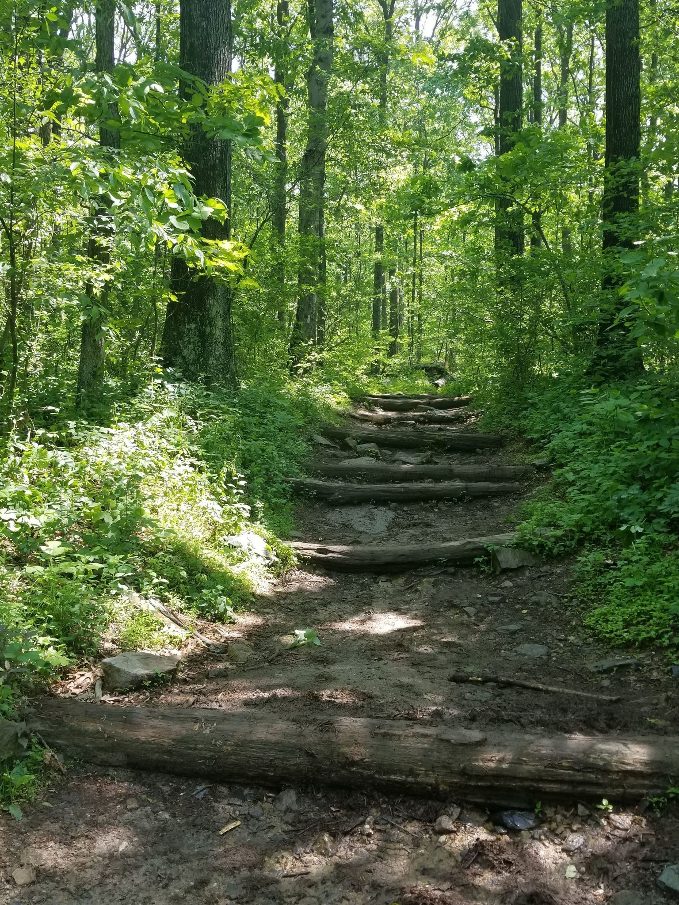 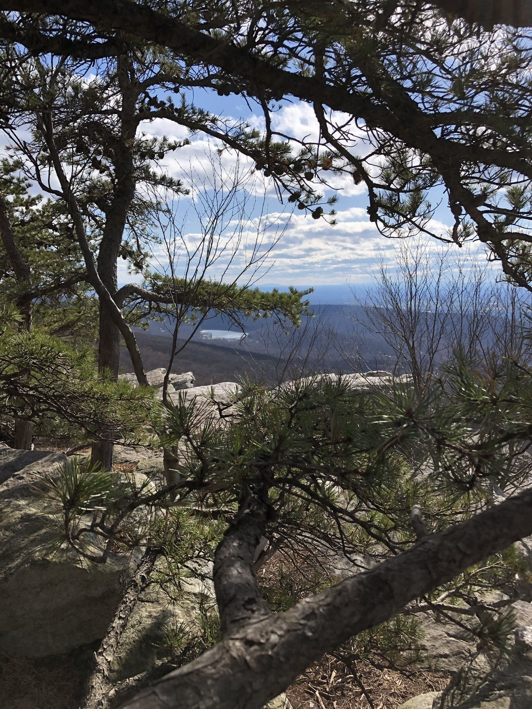 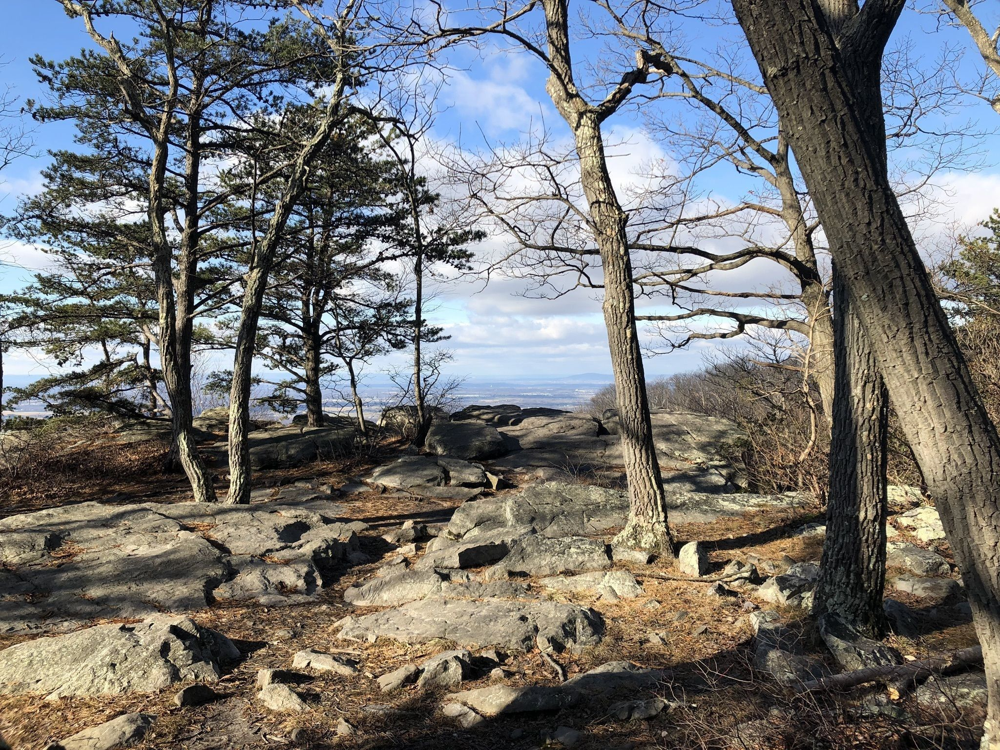
Annapolis Rock via Appalachian Trail is a 5.1 mile heavily trafficked out and back trail located near Boonsboro, Maryland that features beautiful wild flowers and is rated as moderate. The trail is primarily used for hiking and rock climbing and is accessible year-round. Dogs are also able to use this trail but must be kept on leash.
Annapolis Rock off Appalachian Trail Map
Annapolis Rock off Appalachian Trail
×
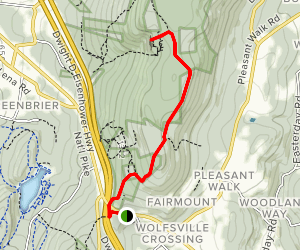
Potomac River off Billy Goat Trail
Potomac River Overlook via Billy Goat Trail is a 2 mile lightly trafficked loop trail located near Potomac, Maryland that features a river and is good for all skill levels. The trail is primarily used for hiking, walking, running, and nature trips.
Potomac River off Billy Goat Trail Map
Potomac River off Billy Goat Trail
×
Chimney Rock in Catoctin Mountain Park
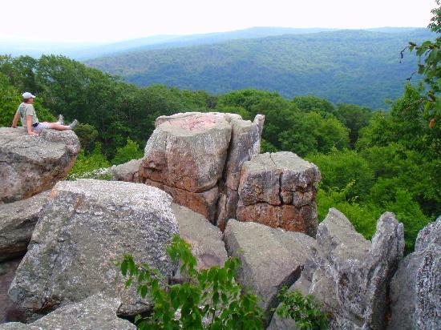
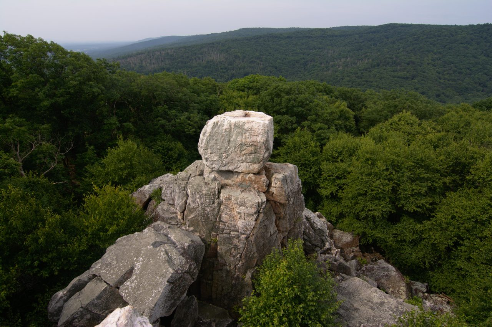 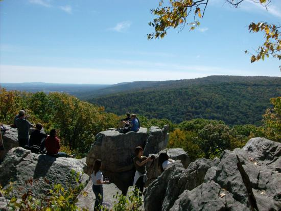
Chimney Rock Trail from Headquarters is a 2.2 mile heavily trafficked out and back trail located near Thurmont, Maryland that offers the chance to see wildlife and is rated as moderate. The trail is primarily used for hiking, walking, running, and nature trips.
Chimney Rock in Catoctin Mountain Park Map
Chimney Rock in Catoctin Mountain Park
×
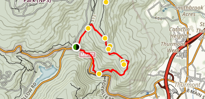
High Rock Overlook in Pen Mar Park
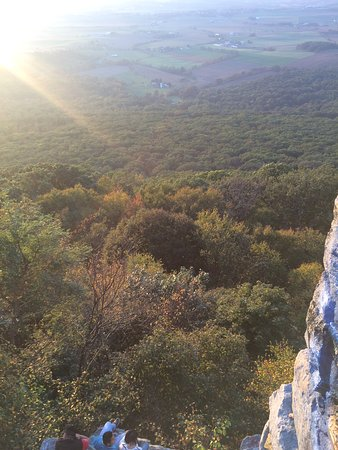 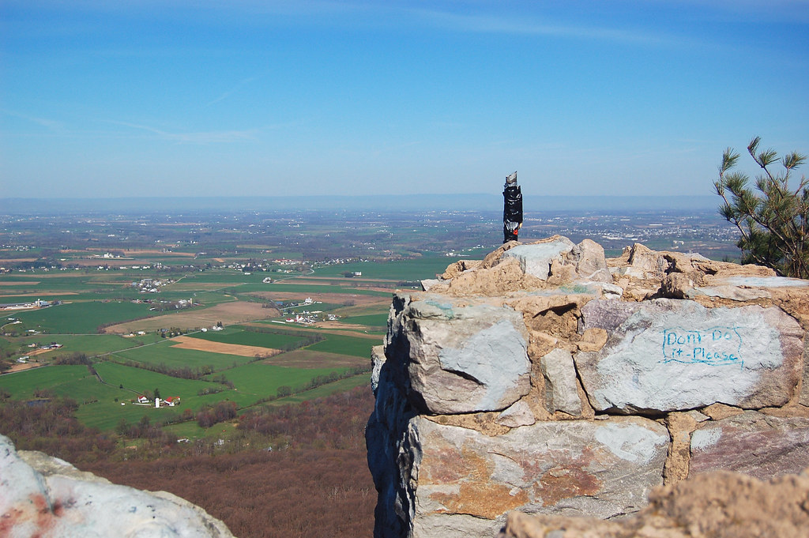 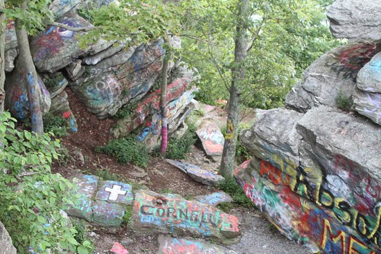
Pen Mar High Rock Overlook Loop is a 5.5 mile loop trail located near Smithsburg, Maryland that features a great forest setting and is rated as moderate. The trail is primarily used for hiking, walking, and nature trips.
High Rock Overlook in Pen Mar Park Map
High Rock Overlook in Pen Mar Park
×
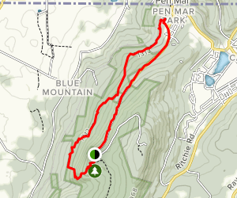
Sugarloaf Mountain
Pen Mar High Rock Overlook Loop is a 5.5 mile loop trail located near Smithsburg, Maryland that features a great forest setting and is rated as moderate. The trail is primarily used for hiking, walking, and nature trips.
Sugarloaf Mountain Map
Sugarloaf Mountain
×